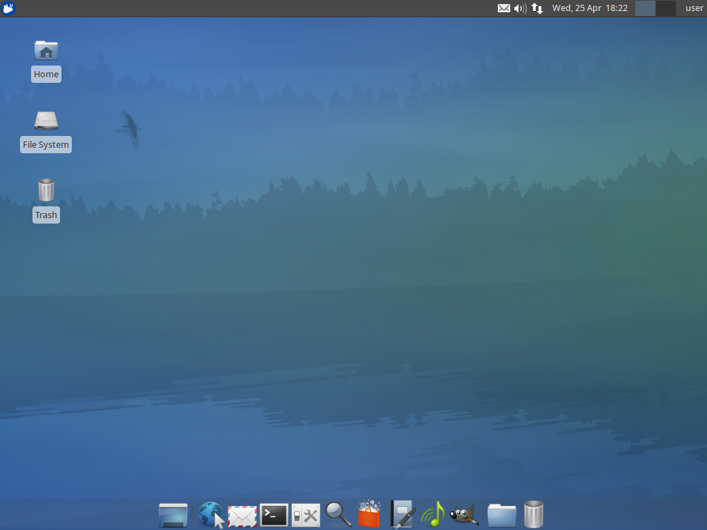
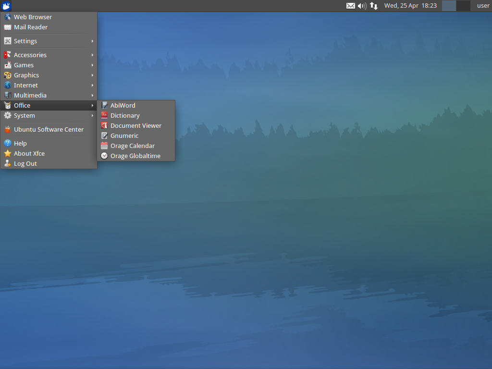
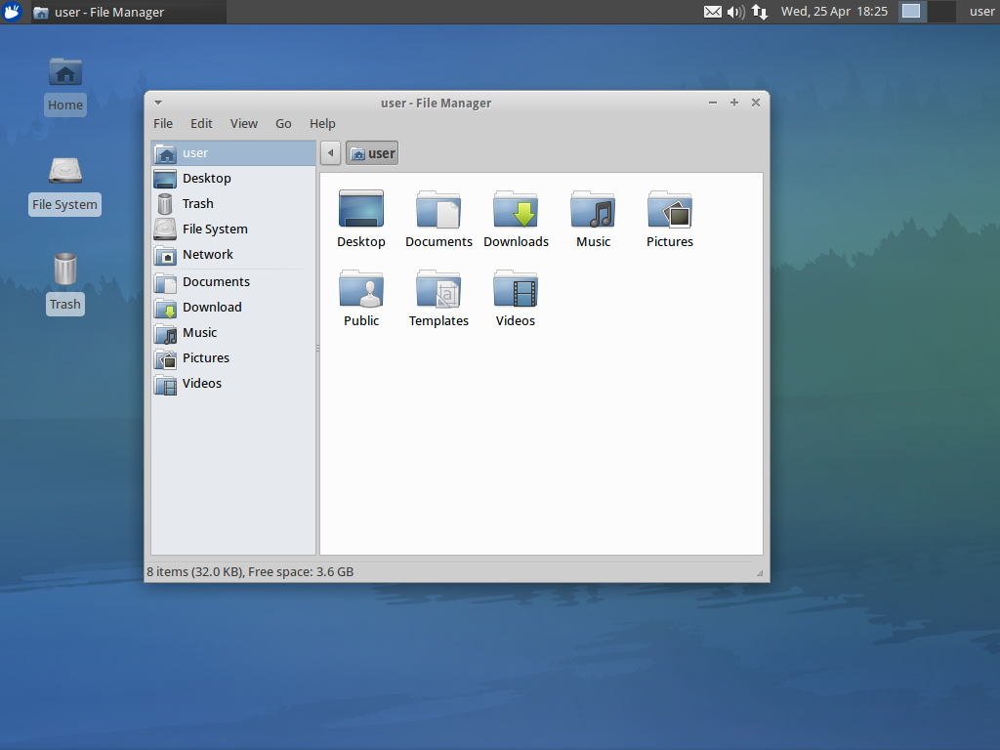
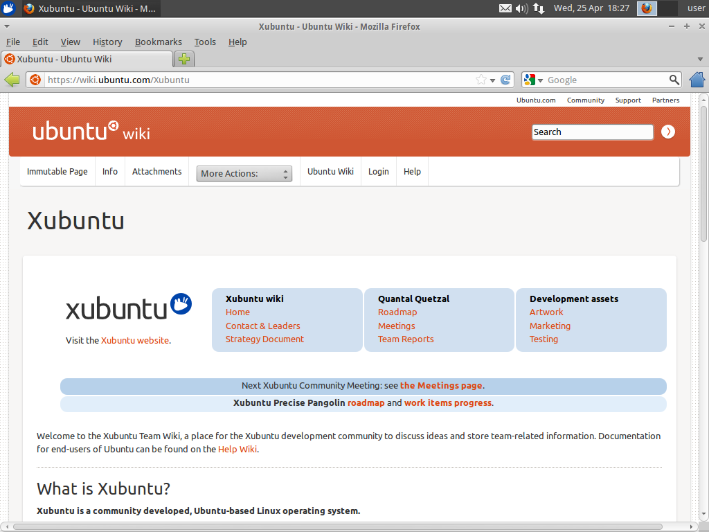
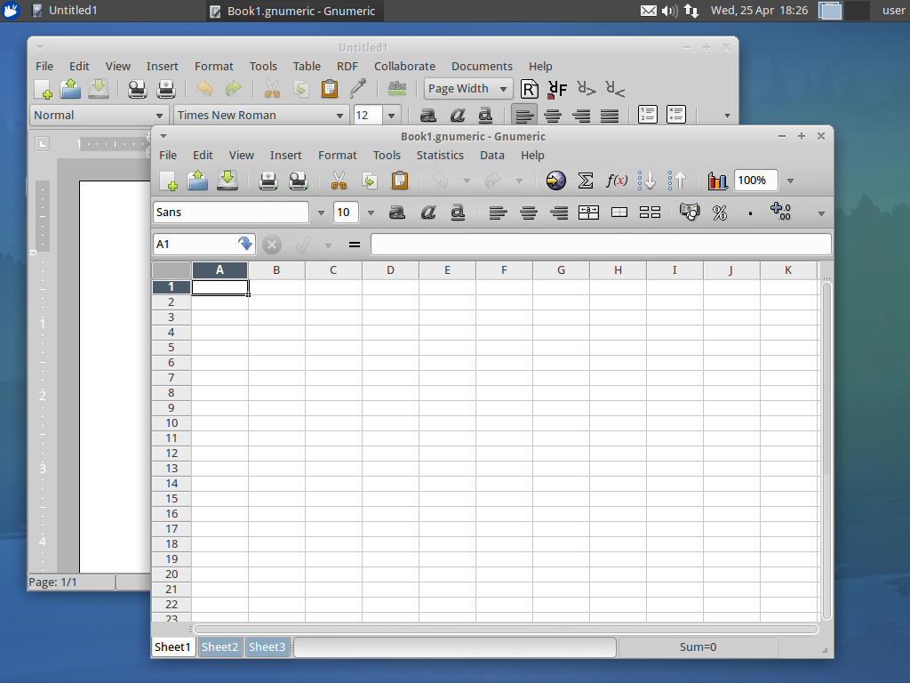

Xubuntu 12.04
Xubuntu 12.04 LTS incorporated many changes, including changes to the default shortcuts. The Pulseaudio volume control (pavucontrol) was introduced as replacement for xfce4-mixer. Along with the 12.04 release, the new Xubuntu logo saw daylight.
- Codename
- Precise Pangolin
- Release Date
- April 26, 2012
- End of Life
- April 29, 2015
Downloads
Torrents Highly recommended!
Direct Downloads Click to open!
Articles
-
Xubuntu 12.04 End of Life
April 29, 2015
-
Xubuntu 12.04.4 released
February 6, 2014
-
LTS upgrade time!
August 23, 2012
-
FAQ for Xubuntu 12.04 Precise Pangolin
May 5, 2012
-
Xubuntu 12.04 released
April 26, 2012
-
Window resizing in Xubuntu (and Xfce)
April 13, 2012
-
The Countdown is on
April 5, 2012
-
Beta 2 released & new branding
March 29, 2012
-
Help test Xubuntu!
March 25, 2012
-
Xubuntu 12.04 beta 1 released
March 1, 2012
-
Xubuntu 12.04 alpha 2 released
February 2, 2012
In the Press
Release Media




